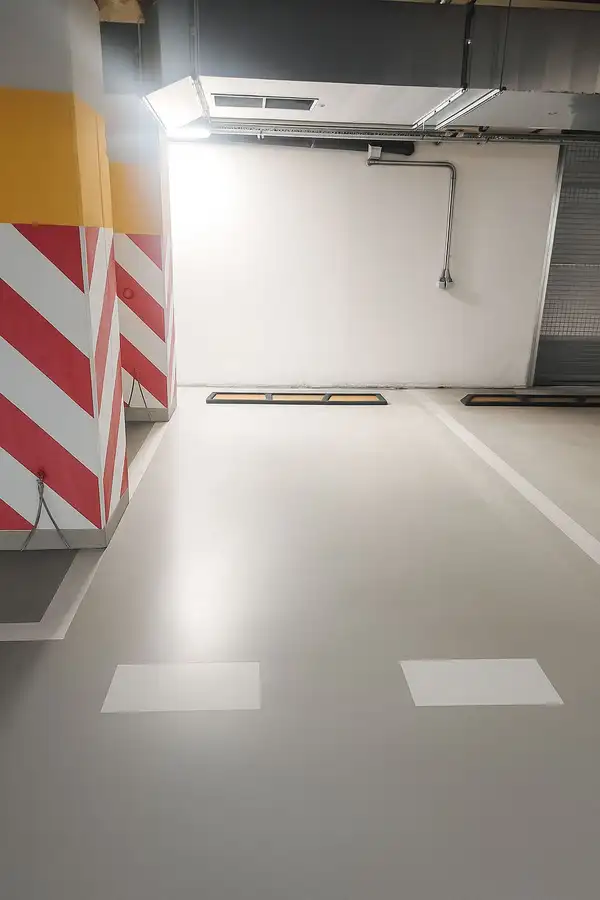
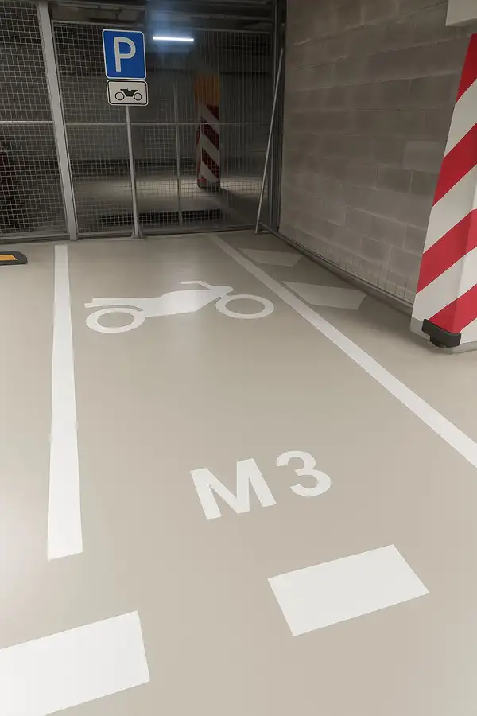

Exkluzívny 4-izbový byt s terasou a výhľadom – Koliba
Koliba, Bratislava
- Dispozícia4-izbový
- Plocha119.94 m²
- Poschodie3.
- Vlastníctvoosobné
- Energetická triedaA
O nehnuteľnosti
Ponúkame na predaj výnimočný 4-izbový byt v jednej z najžiadanejších lokalít Bratislavy – na Kolibe. Byt s celkovou výmerou 119 m² zaujme nielen svojím priestorom, ale aj atmosférou, svetlom a nádhernými výhľadmi na mesto a zeleň.
Dominantou bytu je priestranná obývacia izba prepojená s kuchyňou, ktorá vďaka veľkým oknám doslova dýcha svetlom. Priestor prirodzene nadväzuje na terasu, ideálnu na rannú kávu, večerný pohár vína či oddych s výhľadom, ktorý sa len tak neopozerá.
Byt je dispozične veľmi dobre riešený, pôsobí vzdušne a elegantne, pričom ponúka dostatok súkromia aj pre rodinu. Nachádza sa v kvalitnej a udržiavanej novostavbe skolaudovanej v roku 2012, ktorá spája moderné bývanie s pokojom prírody.
K bytu prislúchajú dve parkovacie miesta v garáži (cena 25 000€ / miesto), čo je v tejto lokalite veľkým benefitom.
Hlavné benefity:
- 4 izby
- výmera 119 m²
- terasa s krásnym výhľadom
- prepojená kuchyňa s obývačkou
- veľké okná, dostatok denného svetla
- kolaudácia 2012
- tichá a vyhľadávaná lokalita Koliba
- 2 garážové parkovacie miesta
- veľkorysá pivnica 9m2
Tento byt je ideálnou voľbou pre tých, ktorí hľadajú komfortné mestské bývanie v spojení s prírodou, súkromím a nadčasovou kvalitou.
Parametre
| Celková rozloha | 119.94 m² |
|---|---|
| Poschodie | 3/vyššie poschodie |
| Počet izieb | 4 |
| Vlastníctvo | osobné |
| Terasa | áno |
| Pivnica | áno |
| Garáž | áno - 2 autá |
| Výťah | áno |
| Parkovanie | vlastné vyhradené |
| Postavené z | tehla |
| Zariadenie | zariadený |
| Klimatizácia | áno |
| Energetický certifikát | A |
| Predzáhradka | nie |
| Okná | hliníkové |
| Orientácia | sever/juh |
| Dátum zverejnenia | 16. 12. 2025 |
Kde to je
Mohlo by Vás zaujímať

Ostatné 18 500 €Na predaj: Parkovacie miesta v GARÁŽI – Promenada Living Park, Nitra Nitra Ponúkame na predaj garážové parkovacie miesta v modernom projekte Promenada Living Park v Nitre. Bezpečné, suché a pohodlné parkovanie priamo v…
Ostatné 7 500 €Na predaj: Parkovacie miesta pre MOTORKY v GARÁŽI – Promenada Nitra Nitra Ponúkame na predaj garážové parkovacie miesta v modernom projekte Promenada Living Park v Nitre. Bezpečné, suché a pohodlné parkovanie priamo v…